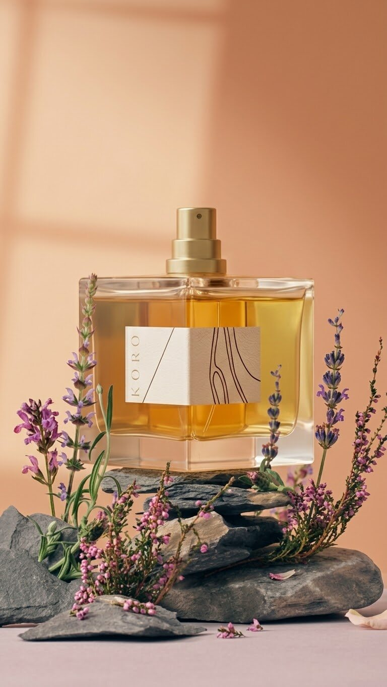
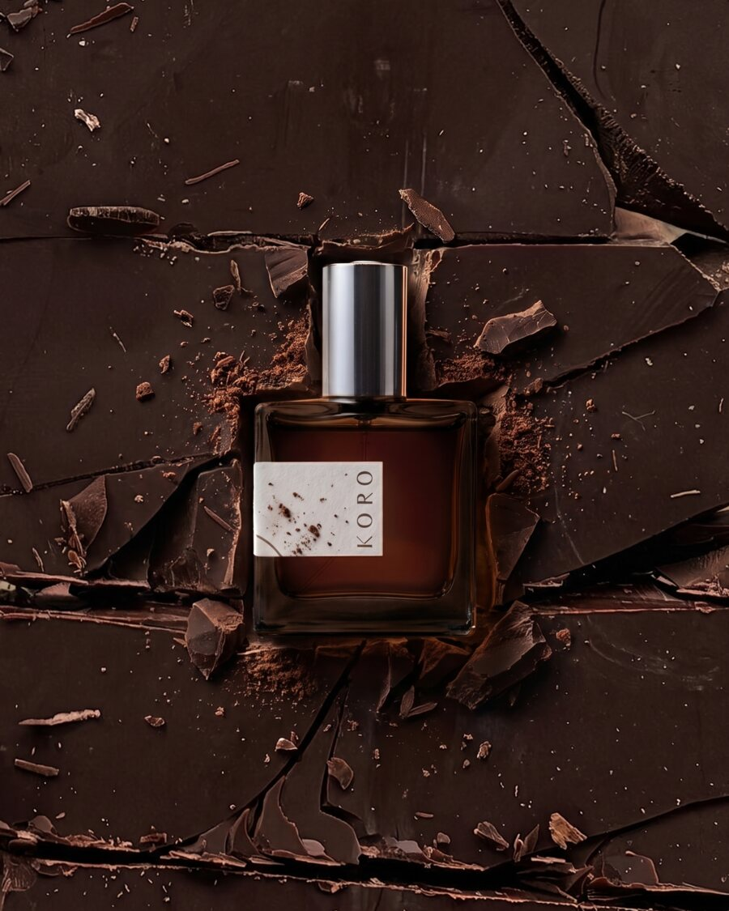
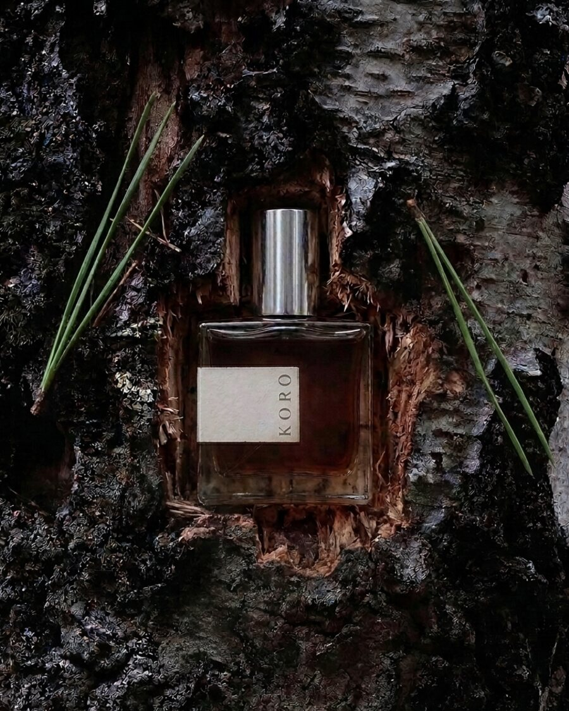

The collection
Perfumes
Ten natural eau de parfums, made in small batches from essential oils, absolutes and tinctures. 10 ml £49 · 50 ml £149.

Mabon
Autumn flowers, golden honey, camomile, marigold, coffee, cardamom
from £49

Bahaat
Coffee, dark chocolate, patchouli, tonka, benzoin
from £49

Amrita
Dark citrus peel, dry wood, flower powder, baked earth
from £49

Cephir
Sparkling pear-apple, cinnamon berries, a sunlit meadow
from £49

Olwen
Acacia, hyacinth, poplar buds, early spring soil
from £49

Sadhana
A woody chypre, like pure highland forest air
from £49

Boreala
Pine resin, wild berries, warm ambery wood
from £49

Laudan
Resin, fossilised amber, leather, moss, aged wood
from £49

Saraha
Smoky incense, olibanum, white oud, vetiver
from £49

Sephet
A vintage chypre of spiced pipe tobacco
from £49